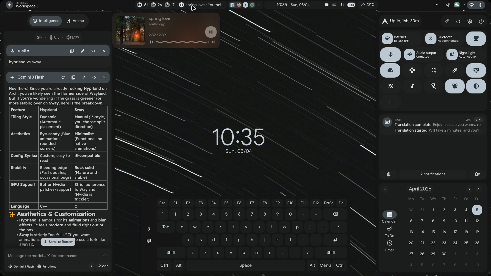

Just a Portfolio.
A tech enthusiast, computer scientist, graphical designer, design enginner, or maybe just a hobby.
Trying my best to learn more about Rust, Linux, AI, and other projects. I starting playing with tech and computers during covid,
where staying at home is pretty much the only option. Through my parent's laptop, I developed skills and logics that is highly
adaptive to computers.
My current project working on is the Linux Kernel,
a Open-Source kernel or OS(operating system) that is highly customizable to any like. You could create your own desktop, or your
Home server. Through your home server, you could create your own storage, VPN, and other interesting features like OpenClaw AI.
Projects
